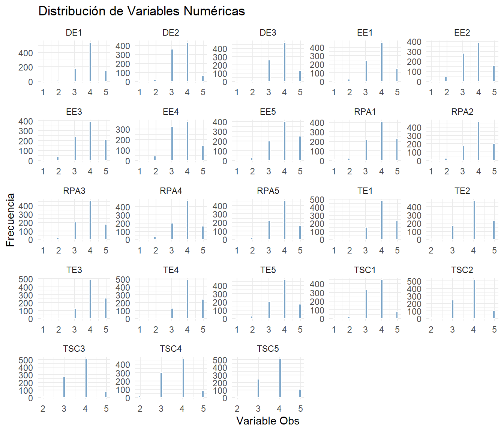
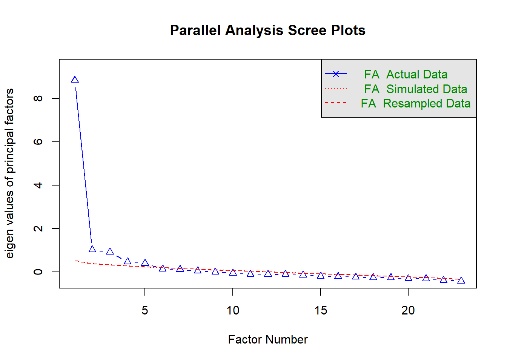
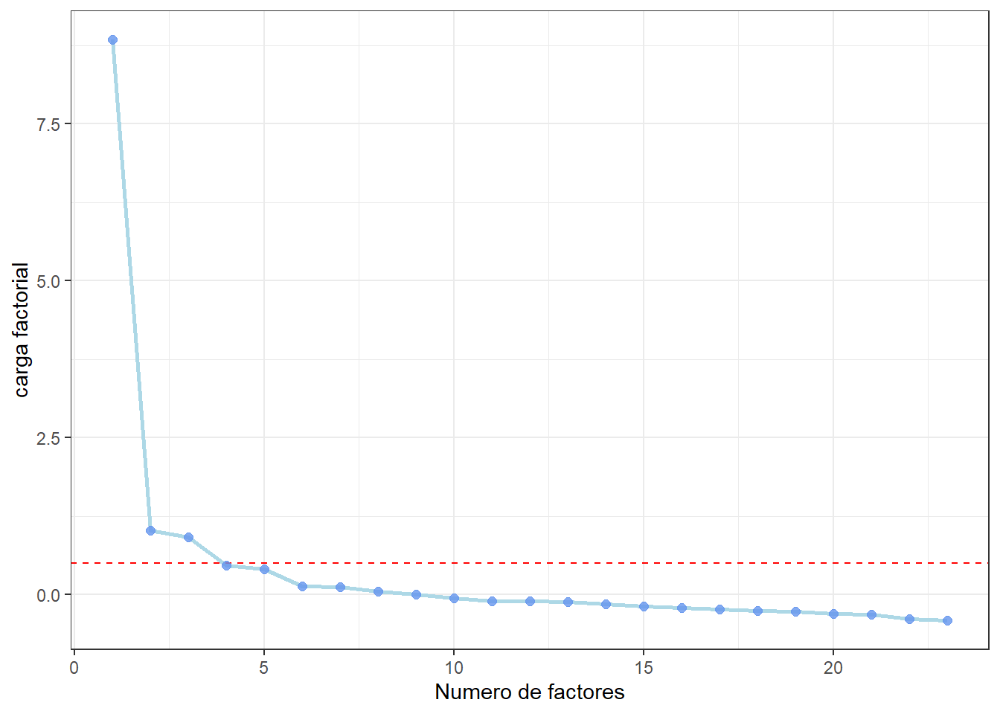
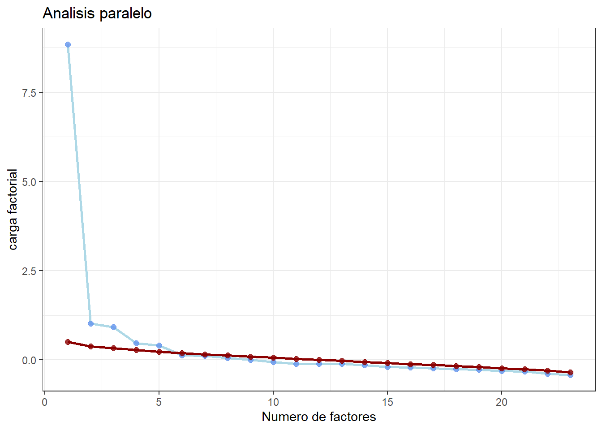

library(lavaan)
library(psych)
library(semTools) #funcion para analisis de resultados,
library(tidyverse)
library(devtools)
library(readxl)
#install.packages("skimr")
library(skimr) # package
#Improve L& f of tables
library(pander)
library(rio)
library(effectsize)
db_respuesta <- read_excel("respuesta.xlsx")Analisis factorial
CFA & EFA
Multivariate analysis
spychometrics
CFA
EFA
Applicacion del analisis factorial integrado
Analisis confirmatorio
Carga de paquetes & datos
Analisis factorial integrado
Se emplea un estrategia en 3 pasos muchas veces empleada que integra el analisis factorial exploratorio y el analisis factorial confirmatorio (otras estrategias solo se emplea uno de los 2):
- Explorar la estructura factorial (Evaluacion de supuestos).
- Construir el modelo factorial y evaluar el ajuste(estimacion EFA, CFA, criterios de informacion).
- Evaluar generabilidad (ajustar la muestra en los datos de prueba)
Evaluacion de Supuestos
Los resultados del modelo EFA, finalmente se validan a travez del modelo CFA, de modo tal que la evaluacion de supuestos de uno corresponde tambien la del otro
Supuestos en los datos
Datos completos
skimr + pander
skim(db_respuesta) %>%
pander()| skim_type | skim_variable | n_missing | complete_rate | numeric.mean |
|---|---|---|---|---|
| numeric | TSC1 | 0 | 1 | 3.653 |
| numeric | TSC2 | 0 | 1 | 3.809 |
| numeric | TSC3 | 0 | 1 | 3.732 |
| numeric | TSC4 | 0 | 1 | 3.709 |
| numeric | TSC5 | 0 | 1 | 3.822 |
| numeric | TE1 | 0 | 1 | 4.061 |
| numeric | TE2 | 0 | 1 | 4.043 |
| numeric | TE3 | 0 | 1 | 4.121 |
| numeric | TE4 | 0 | 1 | 4.105 |
| numeric | TE5 | 0 | 1 | 3.902 |
| numeric | EE1 | 0 | 1 | 3.812 |
| numeric | EE2 | 0 | 1 | 3.727 |
| numeric | EE3 | 0 | 1 | 3.878 |
| numeric | EE4 | 0 | 1 | 3.687 |
| numeric | EE5 | 0 | 1 | 3.987 |
| numeric | DE1 | 0 | 1 | 3.925 |
| numeric | DE2 | 0 | 1 | 3.596 |
| numeric | DE3 | 0 | 1 | 3.817 |
| numeric | RPA1 | 0 | 1 | 3.933 |
| numeric | RPA2 | 0 | 1 | 3.941 |
| numeric | RPA3 | 0 | 1 | 3.884 |
| numeric | RPA4 | 0 | 1 | 3.869 |
| numeric | RPA5 | 0 | 1 | 3.842 |
| numeric.sd | numeric.p0 | numeric.p25 | numeric.p50 | numeric.p75 |
|---|---|---|---|---|
| 0.6849 | 1 | 3 | 4 | 4 |
| 0.6389 | 2 | 3 | 4 | 4 |
| 0.6396 | 2 | 3 | 4 | 4 |
| 0.6734 | 2 | 3 | 4 | 4 |
| 0.6522 | 2 | 3 | 4 | 4 |
| 0.7122 | 1 | 4 | 4 | 5 |
| 0.698 | 2 | 4 | 4 | 5 |
| 0.7052 | 1 | 4 | 4 | 5 |
| 0.6898 | 1 | 4 | 4 | 5 |
| 0.7541 | 1 | 3 | 4 | 4 |
| 0.7589 | 1 | 3 | 4 | 4 |
| 0.8484 | 1 | 3 | 4 | 4 |
| 0.828 | 1 | 3 | 4 | 4 |
| 0.7959 | 1 | 3 | 4 | 4 |
| 0.8105 | 1 | 3 | 4 | 5 |
| 0.677 | 1 | 4 | 4 | 4 |
| 0.682 | 1 | 3 | 4 | 4 |
| 0.6984 | 1 | 3 | 4 | 4 |
| 0.8343 | 1 | 3 | 4 | 5 |
| 0.8049 | 1 | 4 | 4 | 4 |
| 0.7886 | 1 | 3 | 4 | 4 |
| 0.7649 | 1 | 3 | 4 | 4 |
| 0.7858 | 1 | 3 | 4 | 4 |
| numeric.p100 | numeric.hist |
|---|---|
| 5 | ▁▁▆▇▂ |
| 5 | ▁▃▁▇▂ |
| 5 | ▁▅▁▇▁ |
| 5 | ▁▅▁▇▂ |
| 5 | ▁▃▁▇▂ |
| 5 | ▁▁▂▇▃ |
| 5 | ▁▃▁▇▃ |
| 5 | ▁▁▂▇▅ |
| 5 | ▁▁▂▇▃ |
| 5 | ▁▁▃▇▃ |
| 5 | ▁▁▅▇▂ |
| 5 | ▁▁▆▇▃ |
| 5 | ▁▁▅▇▅ |
| 5 | ▁▁▇▇▃ |
| 5 | ▁▁▅▇▅ |
| 5 | ▁▁▂▇▂ |
| 5 | ▁▁▆▇▁ |
| 5 | ▁▁▅▇▂ |
| 5 | ▁▁▅▇▅ |
| 5 | ▁▁▃▇▃ |
| 5 | ▁▁▃▇▃ |
| 5 | ▁▁▃▇▃ |
| 5 | ▁▁▃▇▃ |
Tamaño muestral
Rule of thumb > 200 registros
Variables cuantitativas
Un primer requerimiento antes de comenzar con el analisis factorial, es determinar el nivel de medicion;es decir, si son variables ordinales, cuantitativas, nominales, ya que la estructura de correlacion es la base del analisis factorial de modo tal que dependiendo de nivel de medicion sera necesario emplear una correlacion: pearson,tetracoricas,policoricas.
Variables con similar rango y continuas
Por defecto muchos paquetes en R asumen que son variables cuantitativas, variables obsersables con >5 niveles.
A) Validar normalidad
db.longer_normal <- db_respuesta |>
select(where(is.numeric)) |>
pivot_longer(cols = everything(), names_to = "Variable_obs", values_to = "Valor")
db.longer_normal |>
ggplot(aes(x = Valor)) +
geom_histogram(bins = 30, fill = "steelblue", color = "white", alpha = 0.7) +
facet_wrap(~ Variable_obs, scales = "free") + # Crear subgráficos por variable
theme_minimal() +
labs(title = "Distribución de Variables Numéricas", x = "Variable Obs", y = "Frecuencia")
B)Validar normalidad :Metricas estadisticas
- Hay reglas of generales(rules of thumb), que establecen que ambos estadisticos no deben separar 3
library(e1071)
tbl.stats <- db.longer_normal |>
group_by(Variable_obs) |>
summarise(
skewness = e1071::skewness(Valor, na.rm = TRUE),
kurtosis = e1071::kurtosis(Valor, na.rm = TRUE)
)
library(gt)
tbl.stats |>
gt() |>
data_color(
columns = vars(skewness),
colors = scales::col_bin(
bins = c(-Inf, 0, Inf),
palette = c("coral", "aliceblue")
)
) |>
data_color(
columns = vars(kurtosis),
colors = scales::col_bin(
bins = c(-Inf, 0, Inf),
palette = c("coral", "aliceblue")
)
) |>
tab_header(
title = "Asimetría y Curtosis por Variable"
)| Asimetría y Curtosis por Variable | ||
| Variable_obs | skewness | kurtosis |
|---|---|---|
| DE1 | -0.52605215 | 1.24559696 |
| DE2 | -0.21897007 | 0.63925394 |
| DE3 | -0.13677255 | 0.01245932 |
| EE1 | -0.34581133 | 0.23143832 |
| EE2 | -0.36964012 | 0.12256023 |
| EE3 | -0.31280354 | -0.39901657 |
| EE4 | -0.03410964 | -0.40742547 |
| EE5 | -0.42732927 | -0.26944283 |
| RPA1 | -0.59305403 | 0.50420600 |
| RPA2 | -0.78552074 | 1.22272528 |
| RPA3 | -0.58790017 | 0.74890573 |
| RPA4 | -0.47810685 | 0.33329229 |
| RPA5 | -0.53468885 | 0.67055640 |
| TE1 | -0.46692932 | 0.37701716 |
| TE2 | -0.22002197 | -0.44900737 |
| TE3 | -0.72100623 | 1.60041195 |
| TE4 | -0.47367810 | 0.50711668 |
| TE5 | -0.41165968 | 0.16474956 |
| TSC1 | -0.09242437 | 0.06296766 |
| TSC2 | -0.07293765 | -0.14123339 |
| TSC3 | -0.16580865 | -0.01842834 |
| TSC4 | -0.02578558 | -0.25212689 |
| TSC5 | -0.09955242 | -0.12934441 |
skim(db_respuesta)| Name | db_respuesta |
| Number of rows | 876 |
| Number of columns | 23 |
| _______________________ | |
| Column type frequency: | |
| numeric | 23 |
| ________________________ | |
| Group variables | None |
Variable type: numeric
| skim_variable | n_missing | complete_rate | mean | sd | p0 | p25 | p50 | p75 | p100 | hist |
|---|---|---|---|---|---|---|---|---|---|---|
| TSC1 | 0 | 1 | 3.65 | 0.68 | 1 | 3 | 4 | 4 | 5 | ▁▁▆▇▂ |
| TSC2 | 0 | 1 | 3.81 | 0.64 | 2 | 3 | 4 | 4 | 5 | ▁▃▁▇▂ |
| TSC3 | 0 | 1 | 3.73 | 0.64 | 2 | 3 | 4 | 4 | 5 | ▁▅▁▇▁ |
| TSC4 | 0 | 1 | 3.71 | 0.67 | 2 | 3 | 4 | 4 | 5 | ▁▅▁▇▂ |
| TSC5 | 0 | 1 | 3.82 | 0.65 | 2 | 3 | 4 | 4 | 5 | ▁▃▁▇▂ |
| TE1 | 0 | 1 | 4.06 | 0.71 | 1 | 4 | 4 | 5 | 5 | ▁▁▂▇▃ |
| TE2 | 0 | 1 | 4.04 | 0.70 | 2 | 4 | 4 | 5 | 5 | ▁▃▁▇▃ |
| TE3 | 0 | 1 | 4.12 | 0.71 | 1 | 4 | 4 | 5 | 5 | ▁▁▂▇▅ |
| TE4 | 0 | 1 | 4.11 | 0.69 | 1 | 4 | 4 | 5 | 5 | ▁▁▂▇▃ |
| TE5 | 0 | 1 | 3.90 | 0.75 | 1 | 3 | 4 | 4 | 5 | ▁▁▃▇▃ |
| EE1 | 0 | 1 | 3.81 | 0.76 | 1 | 3 | 4 | 4 | 5 | ▁▁▅▇▂ |
| EE2 | 0 | 1 | 3.73 | 0.85 | 1 | 3 | 4 | 4 | 5 | ▁▁▆▇▃ |
| EE3 | 0 | 1 | 3.88 | 0.83 | 1 | 3 | 4 | 4 | 5 | ▁▁▅▇▅ |
| EE4 | 0 | 1 | 3.69 | 0.80 | 1 | 3 | 4 | 4 | 5 | ▁▁▇▇▃ |
| EE5 | 0 | 1 | 3.99 | 0.81 | 1 | 3 | 4 | 5 | 5 | ▁▁▅▇▅ |
| DE1 | 0 | 1 | 3.92 | 0.68 | 1 | 4 | 4 | 4 | 5 | ▁▁▂▇▂ |
| DE2 | 0 | 1 | 3.60 | 0.68 | 1 | 3 | 4 | 4 | 5 | ▁▁▆▇▁ |
| DE3 | 0 | 1 | 3.82 | 0.70 | 1 | 3 | 4 | 4 | 5 | ▁▁▅▇▂ |
| RPA1 | 0 | 1 | 3.93 | 0.83 | 1 | 3 | 4 | 5 | 5 | ▁▁▅▇▅ |
| RPA2 | 0 | 1 | 3.94 | 0.80 | 1 | 4 | 4 | 4 | 5 | ▁▁▃▇▃ |
| RPA3 | 0 | 1 | 3.88 | 0.79 | 1 | 3 | 4 | 4 | 5 | ▁▁▃▇▃ |
| RPA4 | 0 | 1 | 3.87 | 0.76 | 1 | 3 | 4 | 4 | 5 | ▁▁▃▇▃ |
| RPA5 | 0 | 1 | 3.84 | 0.79 | 1 | 3 | 4 | 4 | 5 | ▁▁▃▇▃ |
psych::describe(db_respuesta) vars n mean sd median trimmed mad min max range skew kurtosis se
TSC1 1 876 3.65 0.68 4 3.62 0.00 1 5 4 -0.09 0.06 0.02
TSC2 2 876 3.81 0.64 4 3.78 0.00 2 5 3 -0.07 -0.14 0.02
TSC3 3 876 3.73 0.64 4 3.71 0.00 2 5 3 -0.17 -0.02 0.02
TSC4 4 876 3.71 0.67 4 3.67 0.00 2 5 3 -0.03 -0.25 0.02
TSC5 5 876 3.82 0.65 4 3.79 0.00 2 5 3 -0.10 -0.13 0.02
TE1 6 876 4.06 0.71 4 4.10 0.00 1 5 4 -0.47 0.38 0.02
TE2 7 876 4.04 0.70 4 4.07 0.00 2 5 3 -0.22 -0.45 0.02
TE3 8 876 4.12 0.71 4 4.17 0.00 1 5 4 -0.72 1.60 0.02
TE4 9 876 4.11 0.69 4 4.15 0.00 1 5 4 -0.47 0.51 0.02
TE5 10 876 3.90 0.75 4 3.92 0.00 1 5 4 -0.41 0.16 0.03
EE1 11 876 3.81 0.76 4 3.81 0.00 1 5 4 -0.35 0.23 0.03
EE2 12 876 3.73 0.85 4 3.75 1.48 1 5 4 -0.37 0.12 0.03
EE3 13 876 3.88 0.83 4 3.91 1.48 1 5 4 -0.31 -0.40 0.03
EE4 14 876 3.69 0.80 4 3.67 1.48 1 5 4 -0.03 -0.41 0.03
EE5 15 876 3.99 0.81 4 4.03 1.48 1 5 4 -0.43 -0.27 0.03
DE1 16 876 3.92 0.68 4 3.93 0.00 1 5 4 -0.53 1.25 0.02
DE2 17 876 3.60 0.68 4 3.58 1.48 1 5 4 -0.22 0.64 0.02
DE3 18 876 3.82 0.70 4 3.79 0.00 1 5 4 -0.14 0.01 0.02
RPA1 19 876 3.93 0.83 4 3.97 1.48 1 5 4 -0.59 0.50 0.03
RPA2 20 876 3.94 0.80 4 3.99 0.00 1 5 4 -0.79 1.22 0.03
RPA3 21 876 3.88 0.79 4 3.91 0.00 1 5 4 -0.59 0.75 0.03
RPA4 22 876 3.87 0.76 4 3.89 0.00 1 5 4 -0.48 0.33 0.03
RPA5 23 876 3.84 0.79 4 3.86 0.00 1 5 4 -0.53 0.67 0.03psych::describe(db_respuesta) %>%
pander()| vars | n | mean | sd | median | trimmed | mad | min | max | |
|---|---|---|---|---|---|---|---|---|---|
| TSC1 | 1 | 876 | 3.653 | 0.6849 | 4 | 3.62 | 0 | 1 | 5 |
| TSC2 | 2 | 876 | 3.809 | 0.6389 | 4 | 3.776 | 0 | 2 | 5 |
| TSC3 | 3 | 876 | 3.732 | 0.6396 | 4 | 3.708 | 0 | 2 | 5 |
| TSC4 | 4 | 876 | 3.709 | 0.6734 | 4 | 3.665 | 0 | 2 | 5 |
| TSC5 | 5 | 876 | 3.822 | 0.6522 | 4 | 3.795 | 0 | 2 | 5 |
| TE1 | 6 | 876 | 4.061 | 0.7122 | 4 | 4.098 | 0 | 1 | 5 |
| TE2 | 7 | 876 | 4.043 | 0.698 | 4 | 4.066 | 0 | 2 | 5 |
| TE3 | 8 | 876 | 4.121 | 0.7052 | 4 | 4.174 | 0 | 1 | 5 |
| TE4 | 9 | 876 | 4.105 | 0.6898 | 4 | 4.148 | 0 | 1 | 5 |
| TE5 | 10 | 876 | 3.902 | 0.7541 | 4 | 3.923 | 0 | 1 | 5 |
| EE1 | 11 | 876 | 3.812 | 0.7589 | 4 | 3.815 | 0 | 1 | 5 |
| EE2 | 12 | 876 | 3.727 | 0.8484 | 4 | 3.748 | 1.483 | 1 | 5 |
| EE3 | 13 | 876 | 3.878 | 0.828 | 4 | 3.906 | 1.483 | 1 | 5 |
| EE4 | 14 | 876 | 3.687 | 0.7959 | 4 | 3.672 | 1.483 | 1 | 5 |
| EE5 | 15 | 876 | 3.987 | 0.8105 | 4 | 4.028 | 1.483 | 1 | 5 |
| DE1 | 16 | 876 | 3.925 | 0.677 | 4 | 3.934 | 0 | 1 | 5 |
| DE2 | 17 | 876 | 3.596 | 0.682 | 4 | 3.577 | 1.483 | 1 | 5 |
| DE3 | 18 | 876 | 3.817 | 0.6984 | 4 | 3.795 | 0 | 1 | 5 |
| RPA1 | 19 | 876 | 3.933 | 0.8343 | 4 | 3.974 | 1.483 | 1 | 5 |
| RPA2 | 20 | 876 | 3.941 | 0.8049 | 4 | 3.991 | 0 | 1 | 5 |
| RPA3 | 21 | 876 | 3.884 | 0.7886 | 4 | 3.913 | 0 | 1 | 5 |
| RPA4 | 22 | 876 | 3.869 | 0.7649 | 4 | 3.893 | 0 | 1 | 5 |
| RPA5 | 23 | 876 | 3.842 | 0.7858 | 4 | 3.863 | 0 | 1 | 5 |
| range | skew | kurtosis | se | |
|---|---|---|---|---|
| TSC1 | 4 | -0.09242 | 0.06297 | 0.02314 |
| TSC2 | 3 | -0.07294 | -0.1412 | 0.02159 |
| TSC3 | 3 | -0.1658 | -0.01843 | 0.02161 |
| TSC4 | 3 | -0.02579 | -0.2521 | 0.02275 |
| TSC5 | 3 | -0.09955 | -0.1293 | 0.02204 |
| TE1 | 4 | -0.4669 | 0.377 | 0.02406 |
| TE2 | 3 | -0.22 | -0.449 | 0.02358 |
| TE3 | 4 | -0.721 | 1.6 | 0.02383 |
| TE4 | 4 | -0.4737 | 0.5071 | 0.02331 |
| TE5 | 4 | -0.4117 | 0.1647 | 0.02548 |
| EE1 | 4 | -0.3458 | 0.2314 | 0.02564 |
| EE2 | 4 | -0.3696 | 0.1226 | 0.02866 |
| EE3 | 4 | -0.3128 | -0.399 | 0.02798 |
| EE4 | 4 | -0.03411 | -0.4074 | 0.02689 |
| EE5 | 4 | -0.4273 | -0.2694 | 0.02739 |
| DE1 | 4 | -0.5261 | 1.246 | 0.02287 |
| DE2 | 4 | -0.219 | 0.6393 | 0.02304 |
| DE3 | 4 | -0.1368 | 0.01246 | 0.0236 |
| RPA1 | 4 | -0.5931 | 0.5042 | 0.02819 |
| RPA2 | 4 | -0.7855 | 1.223 | 0.0272 |
| RPA3 | 4 | -0.5879 | 0.7489 | 0.02664 |
| RPA4 | 4 | -0.4781 | 0.3333 | 0.02584 |
| RPA5 | 4 | -0.5347 | 0.6706 | 0.02655 |
Supuestos en la matriz de correlacion
Estructura de correlacion
Es necesario validar que existe suficiente correlacion entre las variables observadas,sino no tiene caso si quiera plantear la existencia de factores, para ellos se puede calcular el test de Bartlett, el cual testea :
ho : Matriz de correlacion es una matriz identidad (0’s fuera de la diagonal) h1 : no lo es
# nobmres de columnas
varnames <- colnames(db_respuesta)
## Matriz de correlacion
mtr.corr_resp <- cor(db_respuesta[,varnames])
mtr.corr_bart_result <-psych::cortest.bartlett(R=mtr.corr_resp,n = nrow(db_respuesta))
mtr.corr_bart_result$p.value<0.05 # Mucho cuidado con n, dependiende de su dimensiodad varia de significativo o no [1] TRUEExiste realmente gran correlacion ?
Para ello requerimos el kmo que se puede entender como la propocion de la varianza total, explicada por los factores
El estado kmo , en particular se establece los siguientes umbrales :
| KMO | Interpretación |
|---|---|
| ≥ 0.90 | Excelente |
| 0.80–0.89 | Muy bueno |
| 0.70–0.79 | Aceptable |
| 0.60–0.69 | Mediocre |
| 0.50–0.59 | Pobre |
| < 0.50 | Inaceptable |
KMO_result <- KMO(db_respuesta)Muestra para generalizacion
Se recomienda tener una muestra para probar los resultados del modelo factorial, al respecto :
- para calcular el modelo factorial : n(tamaño muestra) = 5*numero de parametros
- considerar tener una muestra de testeo/ evaluacion para extrapolar/generalizar resultados : 2*n
# tamaño de muestra mitad
mitad_muestra <- nrow(db_respuesta)/2
set.seed(19)
## Vector para marcar datos
vc_marca <- sample(c(rep("model.building",mitad_muestra),
rep("holdout",mitad_muestra)
))
## Dividir el vecto x, segun grupos definidos en el vector y
db_model.build_list <- split(db_respuesta,vc_marca)
db_train <-db_model.build_list$model.building
db_test <-db_model.build_list$holdoutEFA : Analisis factorial exploratorio
Parte de un supuesto clave: Existen los factores, pero no se saben cuantos son ni que variables observables lo componen
Puede ser realizada con 2 metodos, que no necesariamente se menoscaban, de hecho se complementan :
- Analisis paralelo : Para detectar el numero de factores(ejm constructos)
- Analisis de ajuste : Para detectar el ajuste del modelo con el numero de factores decidido en a) se puede calcular criterios de informacion ejm BIC
paralel_results <- fa.parallel(x =db_train,fa="fa")
Parallel analysis suggests that the number of factors = 5 and the number of components = NA # cargas factoriales : representan las correlaciones entre las variables obser y el factor latente, si los datos
# estuvieran estadarizados
value.factor <- paralel_results$fa.values # factorial loadins
value.factor.simil <- paralel_results$fa.sim
n.factor <- 1:length(value.factor) # numero de factores
screen.data <- tibble(loading = value.factor,
loading_simul = value.factor.simil,
n_factor = n.factor)# Idealmente se espera cargas superior a 0.5 (gpt)
screen.data |>
ggplot(aes(n.factor,value.factor)) +
geom_line(size = 1,
color = "lightblue") +
geom_hline(yintercept = 0.5, linetype = "dashed",color = "red") +
geom_point(color="cornflowerblue",
size = 2,
alpha=.8) +
theme_bw() +
xlab("Numero de factores") +
ylab("carga factorial")
## Analisis paralelo
screen.data |>
ggplot() +
geom_line(aes(n.factor,value.factor),
size = 1,
color = "lightblue") +
geom_point(aes(n.factor,value.factor),
color="cornflowerblue",
size = 2,
alpha=.8) +
geom_line(aes(n.factor,value.factor.simil),
size = 1,
color = "darkred") +
geom_point(aes(n.factor,value.factor.simil),
color="darkred",
size = 2,
alpha=.8) +
ggtitle("Analisis paralelo") +
theme_bw() +
xlab("Numero de factores") +
ylab("carga factorial")
Esta metodologia solo dice un numero plausible de factores, mas no el numero final(lo mejor es considerar el rango que lo limita) , el numero final de factores debe ser decidido finalmente en base a : la interpretabilidad y el ajuste
Estimacion
La varianza de los items tiene 3 componentes : varianza compartida, especifica, y varianza del error - comunalidad,especificidad y varianza residual .
Para estimar un modelo asi se debe especificar: * El numero de factores * El metodo de estimacion * la rotacion de la matriz
Asi para estimar el modelo hay 3 principales tecnicas: * ML * PCA * PAF
results.efa <- lavaan::efa(data = db_train,
nfactors = 4:6, # - el numero otorgado por el analisis paralelo otorga
# el rango, el cual seria le numero de factores adecuado.
rotation = "geomin",# - se escoge este metodo de rotacion xq permite que haya correlacion
# entre factores y tiene sentido pues se habla de constructos educativos
estimator ="MLR", # - Preferible metodo de estimacion al ML, por posibles violaciones del
# supuesto de normalidad
meanstructure = TRUE)Criterios de informacion
Deacuerdo la metricas de los criterios de criterios de informacion queda claro que el mejor terminar ajustando es el modelo de 5 factores
sort(lavaan::fitmeasures(results.efa)["bic",])nfactors = 5 nfactors = 4 nfactors = 6
18142.38 18167.49 18189.29 Cargas factoriales
el paquete lavaan te otorga las cargas estandarizadas de modo tal que representarian la correlacion entre la variable observada y el factor
results.efa$nf5
f1 f2 f3 f4 f5
TSC1 0.584* * .*
TSC2 0.487* * .*
TSC3 0.637* .* *
TSC4 0.578* .* .* *
TSC5 0.547* .
TE1 0.728* .
TE2 . 0.672*
TE3 0.708* .
TE4 0.651* .*
TE5 0.337* .* .*
EE1 . 0.469* .
EE2 .* 0.689*
EE3 0.768*
EE4 .* 0.732* .
EE5 . 0.479* .*
DE1 -0.353* 0.744* .
DE2 .* 0.821*
DE3 .* 0.755*
RPA1 0.851*
RPA2 0.906*
RPA3 0.624*
RPA4 . . 0.350*
RPA5 . . 0.338*Modelo bayesiano
db_train_sumas <- db_train %>%
mutate(
# Aplicamos across con una expresión lógica para cada grupo
TSC = rowSums(across(matches("^TSC\\d+")), na.rm = TRUE),
EE = rowSums(across(matches("^TE\\d+")), na.rm = TRUE),
TE = rowSums(across(matches("^EE\\d+")), na.rm = TRUE),
DE = rowSums(across(matches("^DE\\d+")), na.rm = TRUE),
RPA = rowSums(across(matches("^RPA\\d+")), na.rm = TRUE)
)
#install.packages("BayesFM")
library("BayesFM")
# specify model
model <- c( # X1 covariate in all equations
paste0('TSC',' ~ ','TSC',1:5), # X2 covariate for Y1-Y5 only
paste0('TE',' ~ ','TE',6:10), # X3 covariate for Y6-Y10 only
paste0('EE',' ~ ','EE',11:15)) # X4 covariate for Y11-Y15 only
model <- lapply(model, as.formula) # make list of formulas
# run MCMC sampler, post process and summarize
mcmc <- befa(model, data = db_train, Kmax = 5, iter = 1000)CFA : Analisis factorial integrado
Este analisis pone a prueba la estructura establecida, para ello usamos la sintaxis lavaan de modelo, tal que asi:
CFA_model <- '
# Regressing items on factors,ejm el componente TSC es medido por TSC1 + TSC2 + TSC3 + TSC5
TSC =~ TSC1 + TSC2 + TSC3 + TSC5
TE =~ TE1 + TE2 + TE3 + TE5
EE =~ EE1 + EE2 + EE3 + EE4
DE =~ DE1 + DE2 + DE3
RPA =~ RPA1 + RPA2 + RPA3 + RPA4
# Se permite correlacion entre factores
TSC ~~ TE
TSC ~~ EE
TSC ~~ DE
TSC ~~ RPA
TE ~~ EE
TE ~~ DE
TE ~~ RPA
EE ~~ DE
EE ~~ RPA
DE ~~ RPA
'
CFA.results.train <- cfa( model = CFA_model,
data = db_train,
estimator = "MLR",
std.lv = TRUE,
meanstructure = TRUE)Analisis de resultados cfa
- std.all Corresponde a las cargas factoriales de cada variable observable en cada contructo
# referenica : https://www.youtube.com/watch?v=GO5lCfHiFzE***
summary(CFA.results.train,standardized=T,fit.measures=T)lavaan 0.6-19 ended normally after 35 iterations
Estimator ML
Optimization method NLMINB
Number of model parameters 67
Number of observations 438
Model Test User Model:
Standard Scaled
Test Statistic 352.092 318.841
Degrees of freedom 142 142
P-value (Chi-square) 0.000 0.000
Scaling correction factor 1.104
Yuan-Bentler correction (Mplus variant)
Model Test Baseline Model:
Test statistic 4069.230 3549.780
Degrees of freedom 171 171
P-value 0.000 0.000
Scaling correction factor 1.146
User Model versus Baseline Model:
Comparative Fit Index (CFI) 0.946 0.948
Tucker-Lewis Index (TLI) 0.935 0.937
Robust Comparative Fit Index (CFI) 0.950
Robust Tucker-Lewis Index (TLI) 0.939
Loglikelihood and Information Criteria:
Loglikelihood user model (H0) -7277.376 -7277.376
Scaling correction factor 1.177
for the MLR correction
Loglikelihood unrestricted model (H1) -7101.330 -7101.330
Scaling correction factor 1.128
for the MLR correction
Akaike (AIC) 14688.751 14688.751
Bayesian (BIC) 14962.260 14962.260
Sample-size adjusted Bayesian (SABIC) 14749.636 14749.636
Root Mean Square Error of Approximation:
RMSEA 0.058 0.053
90 Percent confidence interval - lower 0.051 0.046
90 Percent confidence interval - upper 0.066 0.061
P-value H_0: RMSEA <= 0.050 0.040 0.224
P-value H_0: RMSEA >= 0.080 0.000 0.000
Robust RMSEA 0.056
90 Percent confidence interval - lower 0.048
90 Percent confidence interval - upper 0.064
P-value H_0: Robust RMSEA <= 0.050 0.110
P-value H_0: Robust RMSEA >= 0.080 0.000
Standardized Root Mean Square Residual:
SRMR 0.044 0.044
Parameter Estimates:
Standard errors Sandwich
Information bread Observed
Observed information based on Hessian
Latent Variables:
Estimate Std.Err z-value P(>|z|) Std.lv Std.all
TSC =~
TSC1 0.428 0.029 14.606 0.000 0.428 0.657
TSC2 0.430 0.028 15.320 0.000 0.430 0.692
TSC3 0.396 0.033 11.909 0.000 0.396 0.628
TSC5 0.486 0.029 16.492 0.000 0.486 0.726
TE =~
TE1 0.567 0.034 16.507 0.000 0.567 0.789
TE2 0.519 0.027 19.357 0.000 0.519 0.745
TE3 0.538 0.039 13.883 0.000 0.538 0.788
TE5 0.479 0.041 11.774 0.000 0.479 0.649
EE =~
EE1 0.560 0.035 16.046 0.000 0.560 0.739
EE2 0.664 0.033 19.879 0.000 0.664 0.802
EE3 0.645 0.035 18.492 0.000 0.645 0.786
EE4 0.612 0.035 17.698 0.000 0.612 0.760
DE =~
DE1 0.444 0.042 10.595 0.000 0.444 0.665
DE2 0.446 0.040 11.159 0.000 0.446 0.640
DE3 0.537 0.036 14.749 0.000 0.537 0.738
RPA =~
RPA1 0.683 0.035 19.474 0.000 0.683 0.849
RPA2 0.670 0.037 17.951 0.000 0.670 0.854
RPA3 0.623 0.040 15.403 0.000 0.623 0.788
RPA4 0.435 0.043 10.064 0.000 0.435 0.587
Covariances:
Estimate Std.Err z-value P(>|z|) Std.lv Std.all
TSC ~~
TE 0.659 0.045 14.688 0.000 0.659 0.659
EE 0.766 0.036 21.496 0.000 0.766 0.766
DE 0.564 0.060 9.374 0.000 0.564 0.564
RPA 0.686 0.037 18.725 0.000 0.686 0.686
TE ~~
EE 0.689 0.041 16.816 0.000 0.689 0.689
DE 0.496 0.059 8.452 0.000 0.496 0.496
RPA 0.650 0.044 14.633 0.000 0.650 0.650
EE ~~
DE 0.440 0.061 7.266 0.000 0.440 0.440
RPA 0.745 0.038 19.593 0.000 0.745 0.745
DE ~~
RPA 0.340 0.059 5.742 0.000 0.340 0.340
Intercepts:
Estimate Std.Err z-value P(>|z|) Std.lv Std.all
.TSC1 3.662 0.031 117.614 0.000 3.662 5.620
.TSC2 3.813 0.030 128.595 0.000 3.813 6.145
.TSC3 3.719 0.030 123.332 0.000 3.719 5.893
.TSC5 3.861 0.032 120.631 0.000 3.861 5.764
.TE1 4.064 0.034 118.349 0.000 4.064 5.655
.TE2 4.048 0.033 121.772 0.000 4.048 5.818
.TE3 4.103 0.033 125.699 0.000 4.103 6.006
.TE5 3.934 0.035 111.433 0.000 3.934 5.324
.EE1 3.808 0.036 105.097 0.000 3.808 5.022
.EE2 3.751 0.040 94.879 0.000 3.751 4.533
.EE3 3.884 0.039 99.026 0.000 3.884 4.732
.EE4 3.710 0.038 96.396 0.000 3.710 4.606
.DE1 3.934 0.032 123.361 0.000 3.934 5.894
.DE2 3.600 0.033 108.034 0.000 3.600 5.162
.DE3 3.808 0.035 109.535 0.000 3.808 5.234
.RPA1 3.947 0.038 102.635 0.000 3.947 4.904
.RPA2 3.963 0.037 105.764 0.000 3.963 5.054
.RPA3 3.893 0.038 103.011 0.000 3.893 4.922
.RPA4 3.904 0.035 110.386 0.000 3.904 5.274
Variances:
Estimate Std.Err z-value P(>|z|) Std.lv Std.all
.TSC1 0.242 0.019 12.538 0.000 0.242 0.569
.TSC2 0.201 0.020 10.143 0.000 0.201 0.521
.TSC3 0.241 0.018 13.075 0.000 0.241 0.605
.TSC5 0.212 0.020 10.661 0.000 0.212 0.473
.TE1 0.195 0.018 11.019 0.000 0.195 0.378
.TE2 0.215 0.020 10.979 0.000 0.215 0.444
.TE3 0.177 0.017 10.315 0.000 0.177 0.379
.TE5 0.316 0.029 11.033 0.000 0.316 0.579
.EE1 0.261 0.026 10.042 0.000 0.261 0.454
.EE2 0.244 0.024 10.013 0.000 0.244 0.356
.EE3 0.258 0.026 9.770 0.000 0.258 0.382
.EE4 0.274 0.029 9.610 0.000 0.274 0.423
.DE1 0.248 0.023 10.614 0.000 0.248 0.558
.DE2 0.288 0.023 12.766 0.000 0.288 0.591
.DE3 0.241 0.029 8.396 0.000 0.241 0.455
.RPA1 0.181 0.022 8.246 0.000 0.181 0.279
.RPA2 0.167 0.021 7.812 0.000 0.167 0.271
.RPA3 0.237 0.042 5.590 0.000 0.237 0.379
.RPA4 0.359 0.040 9.004 0.000 0.359 0.655
TSC 1.000 1.000 1.000
TE 1.000 1.000 1.000
EE 1.000 1.000 1.000
DE 1.000 1.000 1.000
RPA 1.000 1.000 1.000library(parameters)
model_parameters(CFA.results.train, standardize = "refit")# Loading
Link | Coefficient | SE | 95% CI | z | p
----------------------------------------------------------------
TSC =~ TSC1 | 0.43 | 0.03 | [0.37, 0.49] | 14.61 | < .001
TSC =~ TSC2 | 0.43 | 0.03 | [0.37, 0.48] | 15.32 | < .001
TSC =~ TSC3 | 0.40 | 0.03 | [0.33, 0.46] | 11.91 | < .001
TSC =~ TSC5 | 0.49 | 0.03 | [0.43, 0.54] | 16.49 | < .001
TE =~ TE1 | 0.57 | 0.03 | [0.50, 0.63] | 16.51 | < .001
TE =~ TE2 | 0.52 | 0.03 | [0.47, 0.57] | 19.36 | < .001
TE =~ TE3 | 0.54 | 0.04 | [0.46, 0.61] | 13.88 | < .001
TE =~ TE5 | 0.48 | 0.04 | [0.40, 0.56] | 11.77 | < .001
EE =~ EE1 | 0.56 | 0.03 | [0.49, 0.63] | 16.05 | < .001
EE =~ EE2 | 0.66 | 0.03 | [0.60, 0.73] | 19.88 | < .001
EE =~ EE3 | 0.65 | 0.03 | [0.58, 0.71] | 18.49 | < .001
EE =~ EE4 | 0.61 | 0.03 | [0.54, 0.68] | 17.70 | < .001
DE =~ DE1 | 0.44 | 0.04 | [0.36, 0.53] | 10.59 | < .001
DE =~ DE2 | 0.45 | 0.04 | [0.37, 0.52] | 11.16 | < .001
DE =~ DE3 | 0.54 | 0.04 | [0.47, 0.61] | 14.75 | < .001
RPA =~ RPA1 | 0.68 | 0.04 | [0.61, 0.75] | 19.47 | < .001
RPA =~ RPA2 | 0.67 | 0.04 | [0.60, 0.74] | 17.95 | < .001
RPA =~ RPA3 | 0.62 | 0.04 | [0.54, 0.70] | 15.40 | < .001
RPA =~ RPA4 | 0.43 | 0.04 | [0.35, 0.52] | 10.06 | < .001
# Correlation
Link | Coefficient | SE | 95% CI | z | p
---------------------------------------------------------------
TSC ~~ TE | 0.66 | 0.04 | [0.57, 0.75] | 14.69 | < .001
TSC ~~ EE | 0.77 | 0.04 | [0.70, 0.84] | 21.50 | < .001
TSC ~~ DE | 0.56 | 0.06 | [0.45, 0.68] | 9.37 | < .001
TSC ~~ RPA | 0.69 | 0.04 | [0.61, 0.76] | 18.72 | < .001
TE ~~ EE | 0.69 | 0.04 | [0.61, 0.77] | 16.82 | < .001
TE ~~ DE | 0.50 | 0.06 | [0.38, 0.61] | 8.45 | < .001
TE ~~ RPA | 0.65 | 0.04 | [0.56, 0.74] | 14.63 | < .001
EE ~~ DE | 0.44 | 0.06 | [0.32, 0.56] | 7.27 | < .001
EE ~~ RPA | 0.74 | 0.04 | [0.67, 0.82] | 19.59 | < .001
DE ~~ RPA | 0.34 | 0.06 | [0.22, 0.46] | 5.74 | < .001#install.packages("semPlot") no sirveAnalisis de ajuste
Medidas de ajuste global
Para ver el ajuste del modelo cfa hay medidas globales y locales, respecto de las globales se tienen las siguientes metricas que evaluan el ajuste y sus repectivas regla :
CFI > 0.90 = buen ajuste.
RMSEA < 0.08 = buen ajuste.
SRMR < 0.08 = buen ajuste absoluto.
semTools
# Resumen de los parámetros
#inspect(CFA.results, "std") # Cargas estandarizadas
#inspect(CFA.results, "cov.lv") # Covarianzas entre factores
# Índices de ajuste
semTools::fitMeasures(CFA.results.train, c("cfi", "tli", "rmsea", "srmr", "aic", "bic")) cfi tli rmsea srmr aic bic
0.946 0.935 0.058 0.044 14688.751 14962.260 # Fiabilidad compuesta y AVE
#reliability(CFA.results.train)Medidas de ajuste local
Hay varias medias, pero las mas pertinente corresponde a analizar la diferencia entre la matriz de varianza covarianza entre model-implied y la muestral
library(lavaan)
# Obtener matriz de correlaciones observadas
r_observed <- lavInspect(CFA.results.train, "sampstat")$cov
# Obtener matriz de correlaciones reproducidas por el modelo
r_model <- lavInspect(CFA.results.train, "implied")$cov
# Calcular matriz de residuos estandarizados
residual_matrix <- r_observed - r_model
print(residual_matrix) TSC1 TSC2 TSC3 TSC5 TE1 TE2 TE3 TE5 EE1 EE2
TSC1 0.000
TSC2 -0.012 0.000
TSC3 0.007 0.012 0.000
TSC5 0.007 -0.002 -0.010 0.000
TE1 -0.019 0.000 -0.009 0.010 0.000
TE2 0.025 -0.014 -0.031 0.021 0.011 0.000
TE3 0.013 -0.010 -0.048 -0.005 0.003 0.008 0.000
TE5 0.025 0.028 0.032 0.022 -0.012 -0.026 -0.005 0.000
EE1 -0.013 0.010 0.004 -0.016 0.042 0.044 0.001 0.072 0.000
EE2 0.004 -0.009 0.025 -0.003 -0.029 -0.050 -0.027 0.043 -0.002 0.000
EE3 -0.013 0.015 -0.039 0.013 -0.021 -0.042 -0.006 0.081 -0.012 -0.001
EE4 -0.002 0.002 0.000 0.013 -0.042 0.021 0.006 0.039 -0.017 0.017
DE1 -0.011 -0.019 0.015 0.002 0.010 -0.026 -0.011 0.036 -0.010 -0.048
DE2 -0.014 0.018 0.030 -0.011 -0.008 -0.025 -0.032 0.059 0.058 0.031
DE3 0.000 -0.008 0.041 -0.021 0.023 0.006 -0.012 0.019 0.048 -0.015
RPA1 -0.008 0.015 -0.034 0.011 -0.013 -0.022 -0.001 0.012 0.011 -0.018
RPA2 -0.006 -0.008 -0.044 0.007 -0.021 0.004 -0.009 0.008 0.015 -0.016
RPA3 0.041 0.016 -0.012 0.003 -0.006 0.010 0.017 0.034 0.035 0.008
RPA4 0.020 0.000 0.003 0.031 0.001 0.027 0.031 0.039 0.042 0.035
EE3 EE4 DE1 DE2 DE3 RPA1 RPA2 RPA3 RPA4
TSC1
TSC2
TSC3
TSC5
TE1
TE2
TE3
TE5
EE1
EE2
EE3 0.000
EE4 0.010 0.000
DE1 -0.042 -0.040 0.000
DE2 0.012 0.052 0.004 0.000
DE3 -0.022 0.012 0.002 -0.006 0.000
RPA1 0.019 -0.041 -0.008 -0.006 0.002 0.000
RPA2 -0.002 -0.053 -0.010 -0.025 -0.024 0.024 0.000
RPA3 0.022 -0.009 0.002 0.016 0.021 -0.009 -0.017 0.000
RPA4 0.031 0.053 0.006 0.056 0.074 -0.046 -0.011 0.052 0.000max(residual_matrix)[1] 0.08051991Evaluar la generabilidad
- si el modelo ajusta bien tambien en el conjunto de datos de entrenamiento, puedes estar seguro que el modelo realmente captura bien la estructura factorial subyacente
CFA.results.test <- cfa(model = CFA_model,
data = db_test,
estimator = "MLR",
std.lv = TRUE,
meanstructure = TRUE)